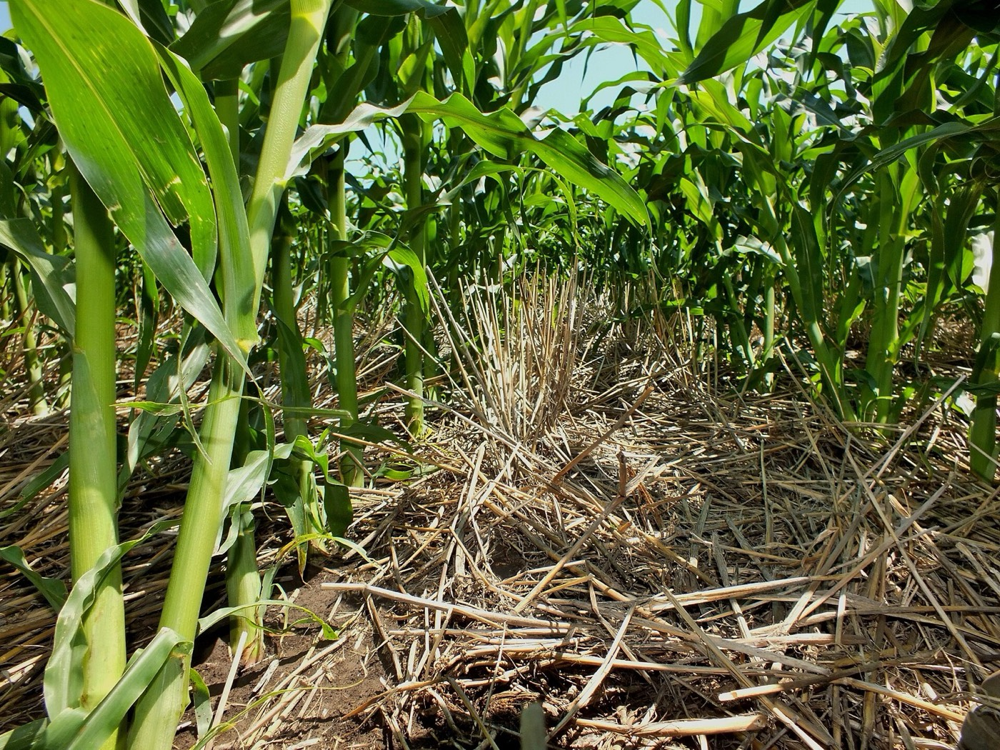

5. Is the management working?
How effective are the current management practices and what improvements are possible?
China’s Black Soil Protection Law came into force on August 1st 2022 (Xinhua 2022), and Liao et al. (2026) call it the world’s first. Xinhua (2022), the state news agency, reported it as a success, quoting one supportive farmer, however they didn’t mention costs in the report. A national plan aimed to cover 9.33 million hectares with conservation tillage by 2025 (Xinhua 2022), and the best known practice is the Lishu Model of leaving straw on the surface and planting without ploughing (Jiang et al. 2025).

.jpg){kind=link}
Proven concepts
Straw covering a third of the surface has been shown to cut erosion by about 80 percent and two thirds cover by about 95 percent, and the arable layer in monitored areas thickened from 19.8 to 23.3 centimetres between 2014 and 2019 (Sui and Dai 2025). This seemed to contradict page 2, but the arable layer is the part farmers till, so deeper ploughing can thicken it while the black layer keeps thinning.
Unconfirmed claims
The most ambitious claims about the Lishu Model come from the main group of scientists investigating it. They state 80 percent less erosion from Lishu Model 2.0 (Jiang et al. 2025) and over 15 percent higher maize yields (Liao et al. 2026). These papers share authors and both grant numbers start with XDA28, and there’s no research coming from a different academy which makes similar claims, making these specific reports not viable. The independent study found that no till with full straw cover lowered maize yields in Jilin (Sui and Dai 2025), which may explain the low adoption rate mentioned in section 4.
The plan also covers only about a quarter of the 36 million hectares of cultivated black soil (Jiang et al. 2025), and I found no figures on enforcement.
Prospects for improvement
- Farmers teaching other farmers the most effective farming as recommended by Yu et al. (2025). On Heilongjiang’s Sanjiang Plain, farmers adopted a new fertiliser method only after trusted neighbours showed them the efficiency of the method (Liao et al. 2026).
- Machinery training and shared machines through cooperatives and subsidies, since training and price were two significant barriers (Huo et al. 2022).
- Yearly measurement of the black layer by a group outside the programme to reduce bias.
Conclusion
Overall, corn farming on Heilongjiang’s black soils is not sustainable in its current state because output is rising while the black layer is thinning. Environmental pressures are managed well with the correct methods, however, those prevention methods are not widely implemented enough and strategies such as farmer-to-farmer word of mouth must be integrated. Lack of independent checking is also a weakness of the programme. Social factors are dealt with poorly too and can be considered the largest problem since older farmers are expected to adopt methods and machines without mention of training in the programme.
Conservation tillage works at the field scale but only covers part of the province, while the national grain target is pushing for every hectare to be covered. As I previously stated in the progress report, the definition of sustainable development differs depending on who describes it. The NBS reports show an optimistic interpretation on the situation by mainly noting the growing harvests while soil scientists are concerned about the resource slowly running out.